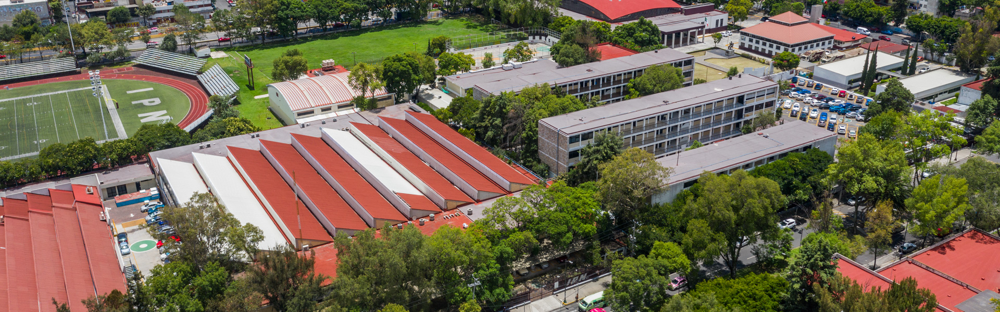

|  |
Somos alumnos del Instituto Politécnico Nacional (IPN) del Centro de Estudios Científicos y Tecnológicos (CECyT) No. 11,
pertenecemos al grupo 2IV5 en el que se trabajó con mucho entusiasmo el “Proyecto Aula”, la forma de trabajo fue por equipos en donde se distribuyó
el trabajo de forma equitativa con el objeto de avanzar más rápido.
Se elaboró un documento en donde se presentan los motivos por los cuales elegimos el tema,
después se añadió un breve marco teórico para sentar las bases que definen al turismo en nuestro país,
posteriormente se presenta la investigación documental que realizamos sobre diferentes lugares que se pueden visitar en la Ciudad de México
(CDMX) con un bajo presupuesto, además añadimos una breve descripción del lugar, costo, horario y algunas ideas de como llegar.
|